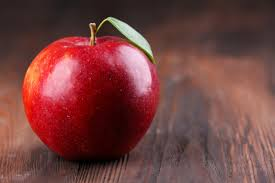

Rozmiar powinien być wyrażony w pixelach, nie cm czy inch.
Mieć znaczenie.
Dostarczać informacji.
Tworzyć właściwy klimat.
Wyróżniać się na pierwszy rzut oka.
Pasować do palety barw.
Ppi (pixels per inch) ma znaczenie tylko podczas drukowania. Podstawowa ppi to 72
Gdy obraz ma wiele kolorów => .jpeg
Gdy obraz ma duże obszary takiego samego koloru (logo,diagramy) => .png
Gdy obraz jest animacją => .gif
Znacznik "img" służy do dodawania zdjęć na stronę. Nie ma elementu zamykającego /img
Atrybuty:
src
Źródło pliku, zwykle względny adres URL. "images/apple.jpg"
alt
Zawiera opis obrazy, gdy ten nie będzie widoczny.
Jeśli obraz jest mało ważny (np. kreska) element "alt" powinien zostać umieszczony, lecz pusty "".
title
Po najechaniu kursorem na obraz, pokaże się okno z opisem.
width
Określa szerokość obrazu w pixelach. Teraz robi się to w CSS.
height
Określa wysokość obrazu w pixelach. Teraz robi się to w CSS.
align
Wyrównuje obraz względem tekstu starą metodą. ("img" musi być w "p") Teraz robi się to w CSS.
Może mieć wartość: left, right. Zależnie od tego, obraz będzie oblany tekstem z prawej lub lewej strony.
Może mieć wartość: top, middle, bottom. Zależnie od tego, obraz będzie oblany tekstem z góry, od środka lub z dołu.

Znacznik "figure" w html5, pozwala dodać obrazek/lub kilka wraz z jego opisem, który musi się znaleźć w el. "figcaption"